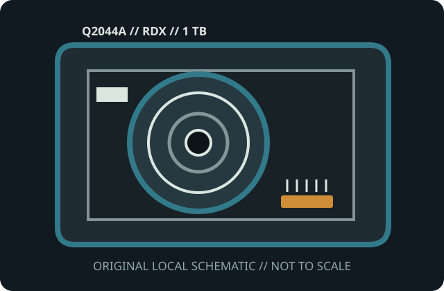

[ MODEL-SPECIFIC MEDIA // PRODUCT RECORD ]
HPE RDX 1 TB Removable Disk Cartridge (Q2044A)
This entry identifies the removable medium SKU, not its drive or dock. Confirm the exact model label, medium generation, host format and drive/dock compatibility before use.

IDENTIFICATION: HPE manufacturer SKU Q2044A; RDX removable disk cartridge with 1 TB 2.5-inch hard disk. Native capacity is distinguished from any data-dependent compression estimate.
Capacity, physical format and compatibility
| Manufacturer / SKU | HPE Q2044A |
|---|---|
| Medium / generation | RDX removable disk cartridge with 1 TB 2.5-inch hard disk; HPE RDX Q2044A 1 TB magnetic removable-disk generation; disk media enclosed in rugged cartridge. |
| Native capacity | 1 TB nominal; actual filesystem capacity is lower and depends on partitioning/format. |
| Drive/dock compatibility | HPE RDX dock qualified for 1 TB Q2044A, or another RDX-standard dock whose manufacturer lists support for this capacity and operating system. Use in a capacity-compatible RDX docking station; cross-vendor RDX media interchange is subject to the dock and OS support matrix. Cartridge compatibility does not guarantee bootability or a particular filesystem. |
| Physical medium | Sealed protective cartridge housing a 2.5-inch rotating hard disk; keyed insertion rails and dock-mated connector; no exposed recording surface. |
| Electrical interface | Internal disk communicates through the RDX dock connector; cartridge has no direct USB interface or standalone power. The dock supplies power and bridges SATA-class media to its host interface. |
| Format limits | Random-access disk, not tape. 1 TB nominal capacity does not promise 1 TB formatted space; host filesystem, partition table, dock capacity support and write-cache behavior set operational limits. |
Storage and preservation cautions
Protect from shocks, drops, active vibration, dust, fluids, extreme temperatures and magnetic fields. Eject through the operating system/dock utility, verify contents after writes, maintain independent checksummed copies and replace aging media proactively.
- Do not force media into a drive/dock or use improvised cleaners, lubricants or repairs. Stop if the shell, connector, tape leader or disk enclosure is damaged.
- Preserve more than one independent copy, verify checksums after transfer, and document the drive/dock, firmware, OS and format used. Plan migration before compatible equipment is lost.
Manufacturer and archival sources
- HPE — RDX Removable Disk Cartridge QuickSpecsManufacturer reference lists the RDX cartridge family and capacity-specific compatibility.
- Quantum RDX technical datasheet (archival copy)Archived Quantum specification sheet for its RDX media family and dock system.
- Library of Congress — Care, Handling, and Storage of Audiovisual MaterialsArchival handling context; supplement it with hard-disk preservation practices.
Capacity labels, compressed ratings, and compatibility are model- and host-specific. Product references and exact drive/dock manuals take precedence over shell fit or a generic family name.